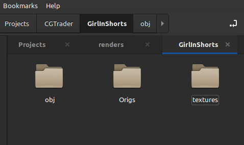
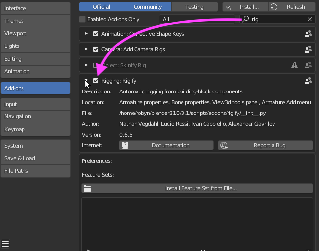
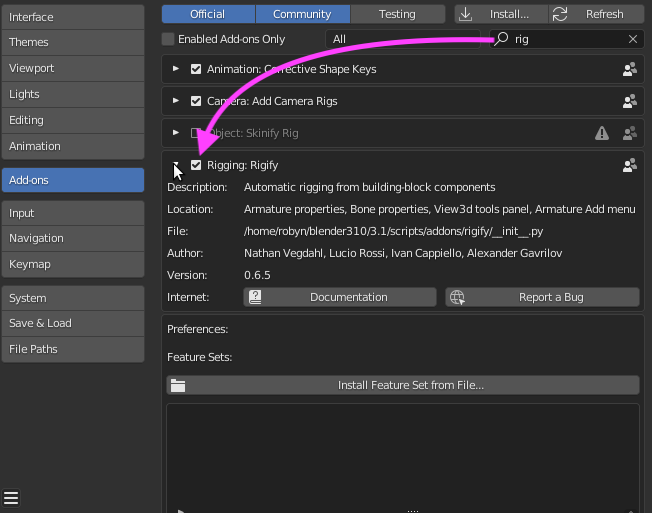

Rigging 3D Figures in Blender
First: A Simple Approach
To start off with: a caveat. This is not a definitive tutorial on rigging in Blender. This approach worked for me, and includes a few tips on how to overcome unexpected pitfalls. Your mileage may vary. I have gone over this road too many times to count, with a ton of failures to show for it. The tools have become a bit easier to use, in the meantime, and the elusive satisfaction of a successful rigging has finally arrived. This document is to help others avoid some of the issues I ran into. A great video to watch on the suject is this one:
For this tutorial, may I suggest you go to CG Trader to download a free humanoid mesh, preferably one that is not rigged already. There are some good figures at CGTrader, some free and others at a ranges of prices. The description claims the figure is rigged, but it is probably for 3DsMax, not Blender. You can also use a Poser figure, or indeed any humanoid figure saved in OBJ format.
Import and Prep Work
Download and Unarchive - Organise
After unarchiving the downloaded files, I rename the folders to keep things organised. I customarily keep texture files in a ‘textures’ folder, the original downloads in an ‘Origs’ folder and the obj file in an ‘obj’ folder… thus:
Import The OBJ
Open Blender and go into either modelling or layout viewport
Import the figure via File -> Import -> Wavefront(obj) - keep the defaults and click OK
The Girl In Shorts will import at the correct scale. Note: Poser figures will need to be scaled up tenfold by selecting the figure expressly - changing the dark-orange outline to light-orange - and pressing [S], then entering the number 10.
Texture Your Figure
To put colour on the figure, I let Blender find the texture files for me:

by pointing the above search function to the textures folder.
Enable Rigify - and a few Checks to Do
The ‘Rigify’ addon comes with Blender: be sure you have it enabled:
 

Be sure the figure you are about to rig is set to a scale of 1. Select the figure - selection is indicated by an orange outline around the figure - press the [N] key, and confirm scale:

If any other number than 1 is displayed for X, Y or Z, press [Ctrl] [A], and select ‘Scale’. a ‘1’ will appear in the X, Y and Z boxes.
The cursor needs to be at the “World Origin”. Press [Shift] [S] to bring up this pie menu:
Select ‘Cursor to World Origin. The cursor should be between the feet of the figure, which is where imported OBJs generally land.
Setting Up and Rigging
Start with the Basic Human (MetaRig) until these steps become more familiar.